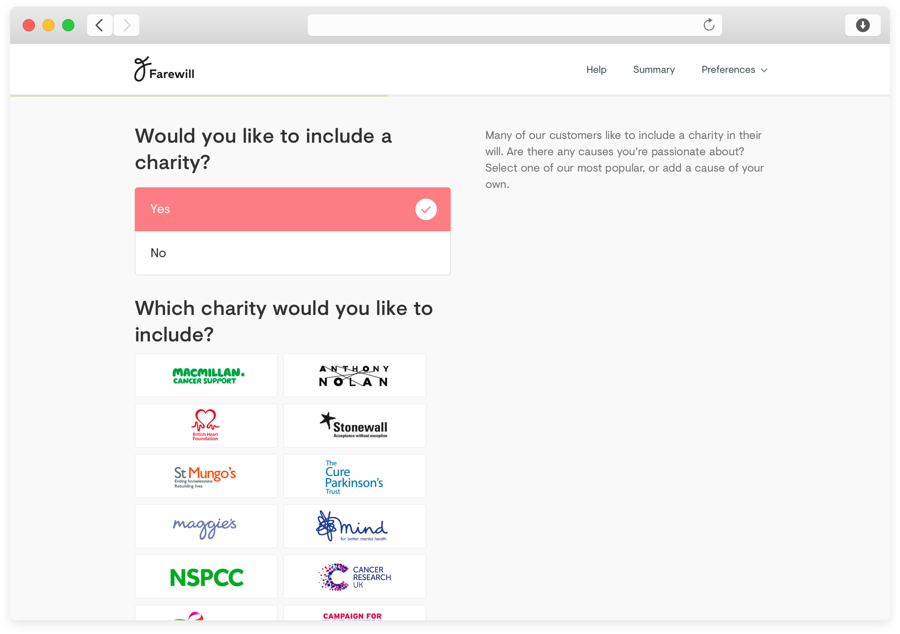

Client
Farewill
Period
December 2016 - Current
Visit
farewill.com
Brand Guidelines
Writing a will is boring and expensive, which probably explains why 97% of Brits don’t have one. Farewill exists to make writing your will easy and affordable, and to cut the bullshit out of legal services. Since the end of 2016, I’ve led design at Farewill. In that time we've shipped an online will writing product, have built a brand around death, and have become the UK’s favourite will writer.
Over time lawyers have made writing your will a long, expensive, and complicated process, so I set out to find out why. We started out by figuring what a will actually was. We did this by writing our own wills, several times, with solicitors, over the phone, and some online services. We worked out the small details and the large problems.
From there we started to prototype the conversations we’d had. Can you write your will by talking to a Messenger bot? Can you write your will by filling in a simple typeform? We wanted to build the simplest conversation we could.
An early prototype using Messenger
After testing a few prototypes, we started to break the process down based on what we’ve heard from our users. Essentially we built 4 stupidly simple, jargon free typeforms, with a nice way of seeing your progress through those.
We kept questions per page to a minimum, and always had supporting text on hand

Part of the simple onboarding
One of our biggest challenges we came across was how different peoples individual situations can be. In all honesty we’d been blunt in our initial research, only imagining the perfect situation of a married couple, with two children. Obviously, that’s not the case. As we spoke to users through Intercom, it was clear just how many different family and financial situations people are in.
You can go and play with the product here. I’d also love to talk you through some of the challenges we faced over a coffee.
We’d built a reasonably succesful product, but this was still a product in the business of wills - and who wants to interact with that? In order to get people wanting to use Farewill, we needed a visual identity that would invite people in. In December we sat out to work with Koto, the creators of brands such as Airbnb, Fanta & Superhi, on a visual re-brand. (I still pinch myself that we got to work with them, it’s rare that they work with teams and budgets of our size).

After initial discussions it was clear that we wanted something stand out & memorable, something bold but not too aggressive. Initial explorations looked at each end of the spectrum — one was soft and fluid, whilst the other was bold and provocative. Neither felt quite right, so we continued to work on something that sat in the middle.

The final icon & wordmark

A unique illustration style

Color palette
Brand Usage
Since creating the initial brand and product Farewill has gone on to become the UK’s favourite will writer. We’ve expanded our offerings to suit more complex needs, moved offices three times, and doubled as a team. If you’d like to learn more about the project, I’d love to talk you through it.